Amb l'app del Llop de Mar t'apuntes a les sortides, veus els avisos, votes a les enquestes i consultes el temps i el calendari. Funciona des del navegador del mòbil, sense instal·lar res.
📱 Tenir l'app al mòbil
Desa l'app a la pantalla d'inici i s'obrirà com una app més, amb la icona del club.
iPhone
Obre remllopdemar.github.io/app amb Safari.
Toca el botó Compartir (el quadrat amb una fletxa cap amunt), a baix o a dalt de la pantalla.
Baixa per la llista i toca Afegir a la pantalla d'inici. Si no hi surt, toca Editar accions al final de la llista i afegeix-lo.
Toca Afegir. Ja tens la icona del Llop de Mar.
Important a l'iPhone: l'app de la pantalla d'inici no comparteix dades amb Safari. El primer cop que l'obris, hauràs de tornar a triar l'idioma i escriure el nom i la clau. Després ja et recorda. En navegació privada no recorda res.
Android
Obre l'app amb Chrome.
Toca el menú ⋮ a dalt a la dreta.
Toca Afegir a la pantalla d'inici o Instal·lar aplicació i confirma.
1. Entrar a l'app
A la pantalla d'entrada pots triar l'idioma (català, castellano, français, English, italiano o português). L'app el recorda en aquest mòbil.
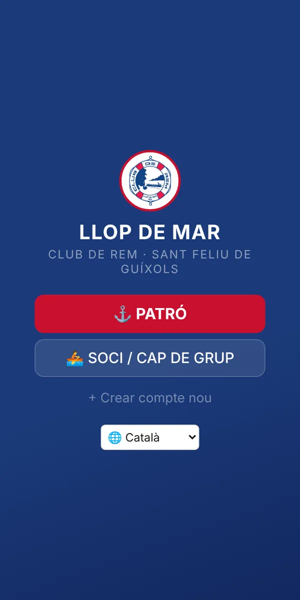
Pantalla d'entrada amb el selector d'idioma
Si el club ja t'ha donat d'alta
Toca 🚣 SOCI / CAP DE GRUP.
Escriu el teu Nom i cognom tal com et va registrar el club. Com que és la primera vegada, deixa la clau en blanc i toca ENTRAR.
Crea la teva clau personal (mínim 6 caràcters): escriu-la a Nova clau, repeteix-la a Confirma la clau i toca CREAR CLAU I ENTRAR.
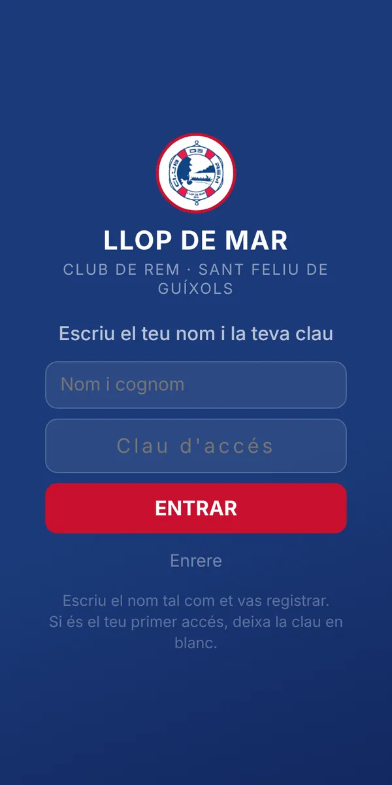
Escriu el teu nom i la clau
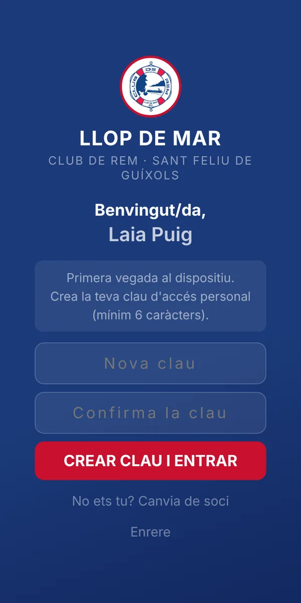
Primera vegada: crear la clau
Si encara no tens compte
A la pantalla d'entrada toca + Crear compte nou.
Escriu el Nom i cognom i tria el teu grup (A, B, C, D, E o F; és obligatori).
Marca la secció: ⚓ Social, 🏆 Competició o totes dues.
Crea la clau (mínim 6 caràcters), confirma-la i toca ENVIAR SOL·LICITUD.
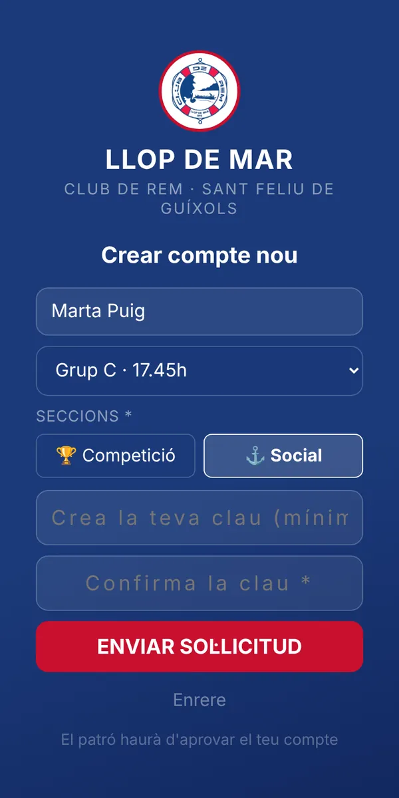
Formulari per crear un compte nou
El patró ha d'aprovar el compte. Quan l'aprovi, entra amb el teu nom i la clau que has creat.
Les properes vegades
El mòbil recorda qui va entrar l'última vegada: toca 🚣 SOCI / CAP DE GRUP i només cal escriure la clau. Si el mòbil és d'una altra persona, toca No ets tu? Canvia de soci.
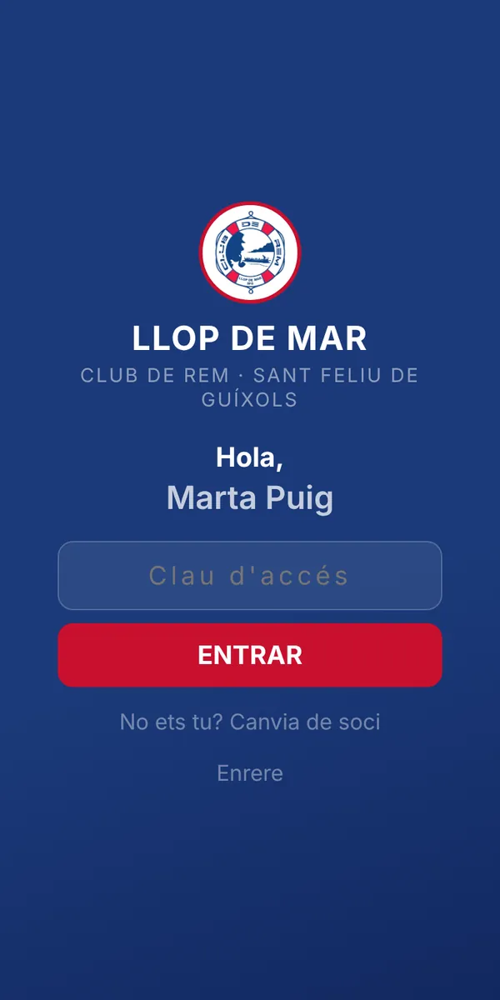
Entrada ràpida: només la clau
No cal tancar la sessió. Si fas servir un mòbil compartit, toca Sortir a dalt a la dreta.
2. La pantalla Inici
És el primer que veus en entrar:
🚣 La meva propera sortida: on estàs apuntat i com (vogador, timonel, reserva o llista d'espera amb la teva posició).
Avisos: els dos últims avisos que et toquen.
Vent i estat del mar al port per als dies de sortida. Toca un dia per veure'l per franges. És una previsió, no una mesura en directe.
Les properes sortides, les enquestes obertes i el calendari del club.
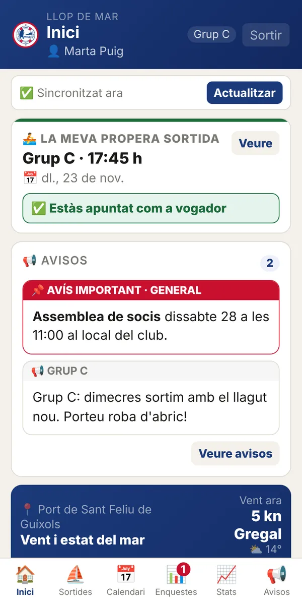
Pantalla Inici
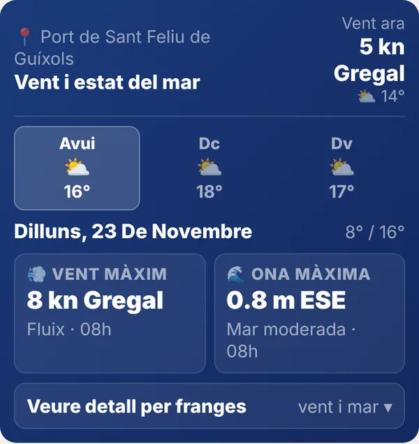
Previsió de vent i mar
3. Sortides
Les sortides de la setmana següent apareixen cada dissabte a les 8:00. Hi ha sortides de grup el dilluns i el dimecres, i sortides obertes a tothom el divendres.
Horaris i obertura
Cada grup té la seva hora. Si ets del grup, t'hi pots apuntar des del dissabte. A l'hora d'obertura general la sortida s'obre a tots els socis.
Grup
Hora
S'obre a tothom
F
8:00
El dia abans a les 20:00
E Matins
9:15
El dia abans a les 20:00
D
16:30
El mateix dia a les 7:30
C
17:45
El mateix dia a les 7:30
B
19:00
El mateix dia a les 7:30
A
20:15
El mateix dia a les 7:30
Divendres (oberta)
17:30 i 18:45
Dilluns a les 7:30
Les sortides de divendres són per a tots els grups: 12 places de vogador i fins a 4 de timonel cadascuna.
La pestanya Sortides
Ves a Sortides (a baix). A dalt hi ha El teu grup: les sortides del teu grup, les obertes a tothom i aquelles on ja estàs apuntat.
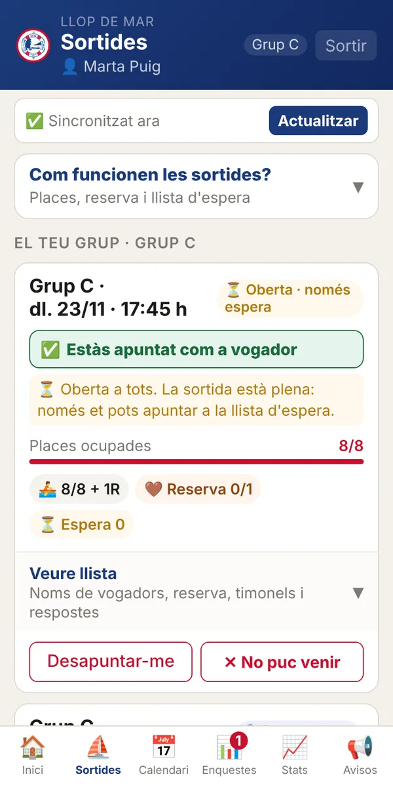
Pestanya Sortides
Les sortides d'altres grups que ja s'han obert estan plegades a sota, al botó taronja Sortides d'altres grups obertes. Tenen la vora taronja i, si t'hi apuntes, l'app et demana confirmació. Apunta-t'hi només si hi vols anar de veritat.
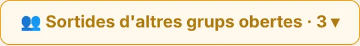
Botó de sortides d'altres grups
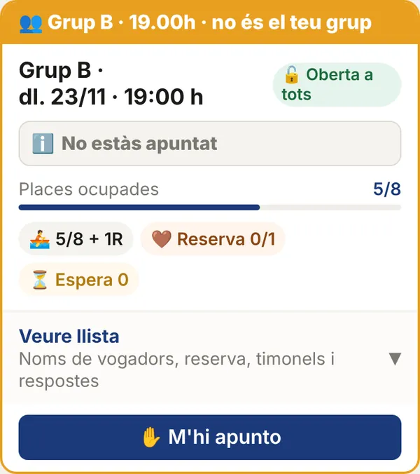
Sortida d'un altre grup, amb vora taronja
Com t'hi apuntes
Busca la sortida i toca ✋ M'hi apunto.
Si vols fer de timonel i la sortida en necessita, toca ⛵ Timonel en lloc de M'hi apunto. No pots ser vogador i timonel alhora.
Toca Veure llista per veure qui hi va.
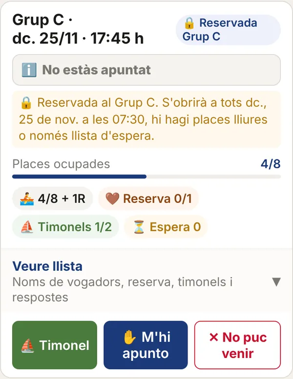
Sortida del teu grup, encara reservada al grup
Si no pots venir
Si estàs apuntat, toca Desapuntar-me com més aviat millor: la plaça passa a qui espera. Les baixes de menys de 24 hores queden registrades com a baixes d'última hora.
A les sortides del teu grup també hi ha ✕ No puc venir. Serveix perquè el cap sàpiga que aquell dia no hi seràs. Si estaves apuntat, et desapunta. Si canvies d'idea, torna-hi a tocar i s'esborra la resposta.
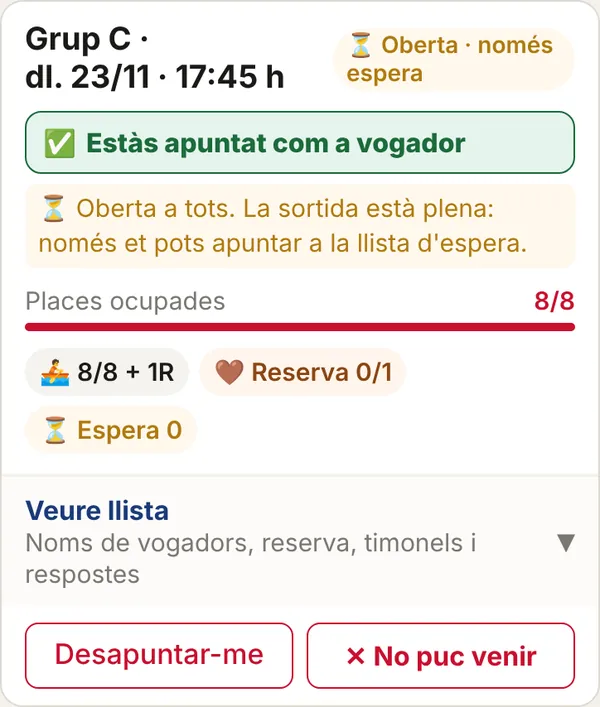
Sortida on ja estàs apuntat
Plaça de reserva i llista d'espera
Reserva: les sortides de grup tenen una plaça de reserva per a la gent del grup. Si queda lliure una plaça normal, la reserva hi puja sola.
Llista d'espera: si la sortida és plena, el botó canvia a ⏳ Llista d'espera. Toca'l i quedes a la cua, amb la teva posició. Per sortir-ne, toca Sortir a sota de la teva posició.
Si algú es desapunta, el primer de la llista entra automàticament. Qui s'ha apuntat abans de l'obertura general té prioritat si és del grup.
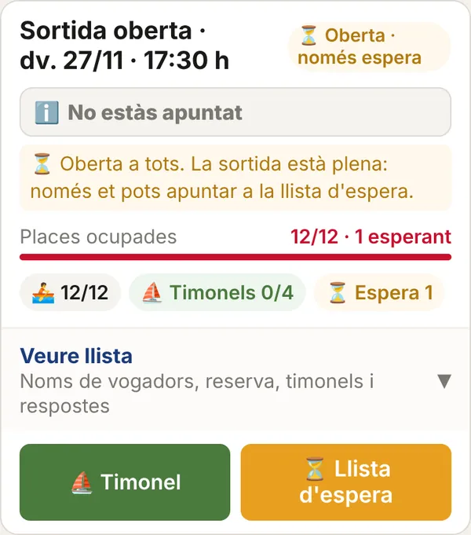
Sortida plena: només queda la llista d'espera
Què vol dir cada etiqueta
Etiqueta
Què vol dir
🔒 Reservada
Només s'hi pot apuntar el grup de la sortida, fins a l'obertura general
🔒 Programada
Sortida de divendres que encara no s'ha obert (s'obre dilluns a les 7:30)
🔓 Oberta a tots
Qualsevol soci s'hi pot apuntar
⏳ Oberta · només espera
És plena: només pots entrar a la llista d'espera
Sortida passada
Han passat 15 minuts de l'hora de sortida i ja no s'hi pot fer cap canvi
Tens dubtes? A la pestanya Sortides hi ha l'apartat Com funcionen les sortides? amb un resum.
Segon grup
Si rems habitualment amb dos grups, demana al patró que t'assigni un segon grup. Veuràs les sortides dels dos grups com a pròpies, amb la mateixa prioritat.
4. Després de la sortida
El cap de grup confirma qui ha vingut. Si estaves apuntat i no vens sense haver-te desapuntat, compta com a No presentat. A la pestanya Stats, a Les meves dades, hi veus les teves assistències i el rànquing de participació del club.
5. Avisos, enquestes i calendari
Avisos
A la pestanya Avisos hi ha els missatges del patró i del teu cap de grup. Només hi veus els que et toquen: generals, de la teva secció o del teu grup. Els marcats amb 📌 són importants i surten a dalt de tot.
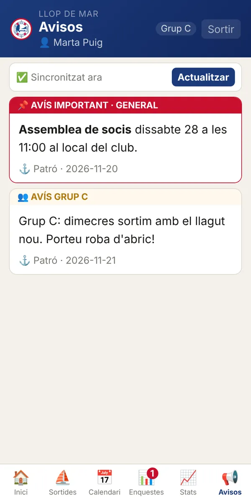
Pestanya Avisos
Enquestes
A Enquestes, toca Votar aquesta opció. Pots canviar el vot mentre l'enquesta estigui oberta. Els vots no són anònims: els noms es veuen a Veure votants.
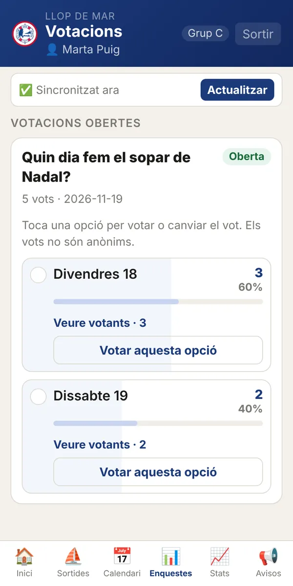
Pestanya Enquestes
Calendari
A Calendari hi ha les regates i els esdeveniments del club. Les sortides habituals no hi surten. Toca un dia marcat per veure'n el detall.
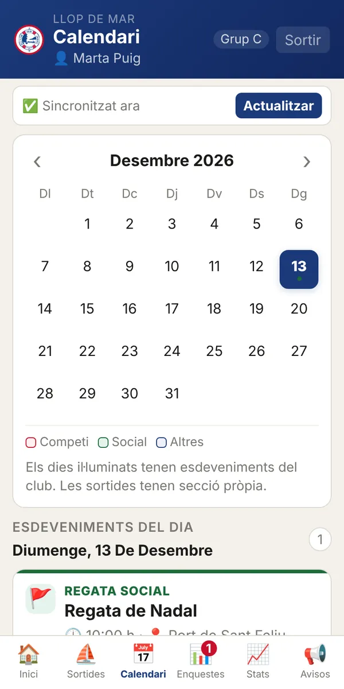
Calendari del club
6. Per als caps de grup
Pots 🔓 Obrir a tothom la sortida del teu grup abans d'hora, i tornar-la a tancar amb 🔒 Tancar als de fora del grup mentre no hagi arribat l'obertura general.
Pots publicar avisos per al teu grup a la pestanya Avisos.
Després de cada sortida, a Inici et surt l'avís Tens 1 sortida per confirmar l'assistència. Toca Confirmar, marca ✅ Ha remat, ❌ No presentat o ➖ Baixa / justificat, i toca Tancar assistència. Només les llistes tancades compten a les estadístiques.
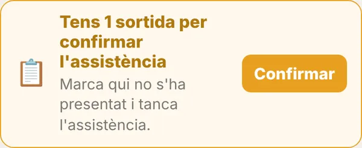
Avís per confirmar l'assistència
7. Preguntes freqüents
Escric el nom i em diu «Nom o clau incorrecta».
Escriu el nom tal com et vas registrar (els accents i les majúscules no importen). Si has demanat el compte fa poc, potser el patró encara no l'ha aprovat.
He oblidat la clau.
Demana al patró que te la reiniciï. Després entra amb el teu nom, deixa la clau en blanc i en crearàs una de nova.
No veig la pestanya Sortides.
Si només ets de competició, la pestanya es diu Entrena. Si ets de les dues seccions, canvia entre 🏆 Competició i ⚓ Social a dalt de la pantalla.
Em surt «Mode només lectura».
L'app no s'ha pogut connectar i et mostra les dades guardades. Comprova la connexió i toca Actualitzar. Mentre surti aquest avís no et pots apuntar ni desapuntar.
No puc apuntar-me a una sortida.
Pot ser que encara estigui reservada a un altre grup, que sigui un divendres abans de dilluns a les 7:30, o que ja hagin passat 15 minuts de l'hora de sortida.
Com canvio l'idioma?
Toca Sortir, tria l'idioma a la pantalla d'entrada i torna a entrar.
Con la app del Llop de Mar te apuntas a las salidas, ves los avisos, votas en las encuestas y consultas el tiempo y el calendario. Funciona desde el navegador del móvil, sin instalar nada.
📱 Tener la app en el móvil
Guarda la app en la pantalla de inicio y se abrirá como una app más, con el icono del club.
iPhone
Abre remllopdemar.github.io/app con Safari.
Toca el botón Compartir (el cuadrado con una flecha hacia arriba), abajo o arriba de la pantalla.
Baja por la lista y toca Añadir a pantalla de inicio. Si no aparece, toca Editar acciones al final de la lista y añádelo.
Toca Añadir. Ya tienes el icono del Llop de Mar.
Importante en iPhone: la app de la pantalla de inicio no comparte datos con Safari. La primera vez que la abras tendrás que volver a elegir el idioma y escribir el nombre y la clave. Después ya te recuerda. En navegación privada no recuerda nada.
Android
Abre la app con Chrome.
Toca el menú ⋮ arriba a la derecha.
Toca Añadir a pantalla de inicio o Instalar aplicación y confirma.
1. Entrar en la app
En la pantalla de entrada puedes elegir el idioma (català, castellano, français, English, italiano o português). La app lo recuerda en este móvil.
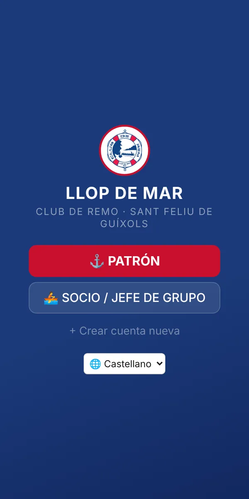
Pantalla de entrada con el selector de idioma
Si el club ya te ha dado de alta
Toca 🚣 SOCIO / JEFE DE GRUPO.
Escribe tu Nombre y apellido tal como te registró el club. Como es la primera vez, deja la clave en blanco y toca ENTRAR.
Crea tu clave personal (mínimo 6 caracteres): escríbela en Nueva clave, repítela en Confirma la clave y toca CREAR CLAVE Y ENTRAR.
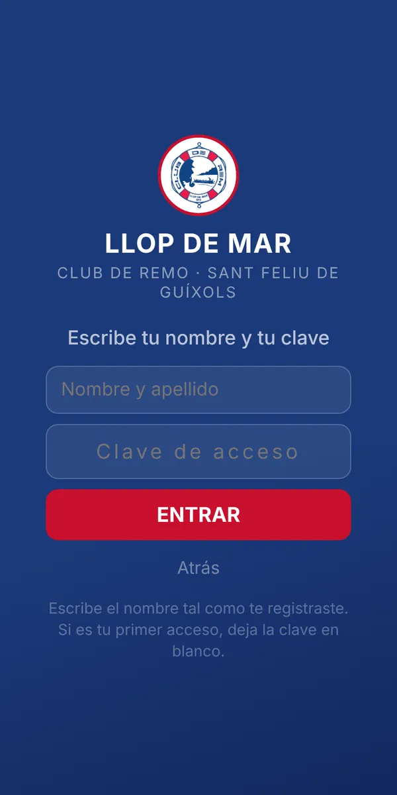
Escribe tu nombre y la clave
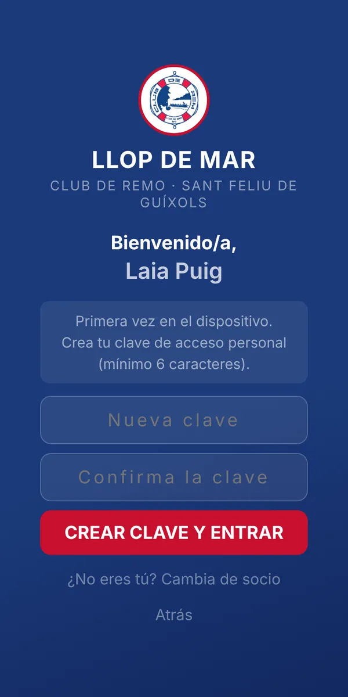
Primera vez: crear la clave
Si aún no tienes cuenta
En la pantalla de entrada toca + Crear cuenta nueva.
Escribe el Nombre y apellido y elige tu grupo (A, B, C, D, E o F; es obligatorio).
Marca la sección: ⚓ Social, 🏆 Competición o las dos.
Crea la clave (mínimo 6 caracteres), confírmala y toca ENVIAR SOLICITUD.
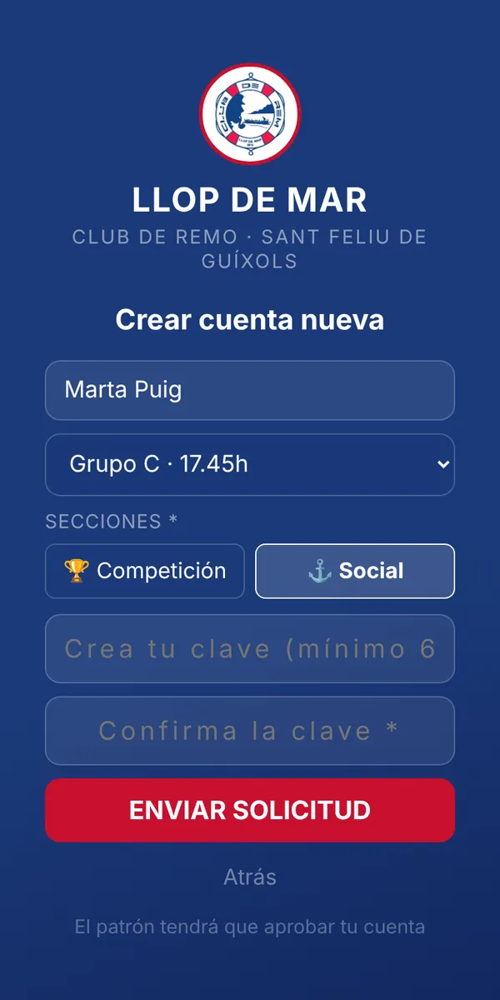
Formulario para crear una cuenta nueva
El patrón tiene que aprobar la cuenta. Cuando la apruebe, entra con tu nombre y la clave que has creado.
Las próximas veces
El móvil recuerda quién entró la última vez: toca 🚣 SOCIO / JEFE DE GRUPO y solo tienes que escribir la clave. Si el móvil es de otra persona, toca ¿No eres tú? Cambia de socio.
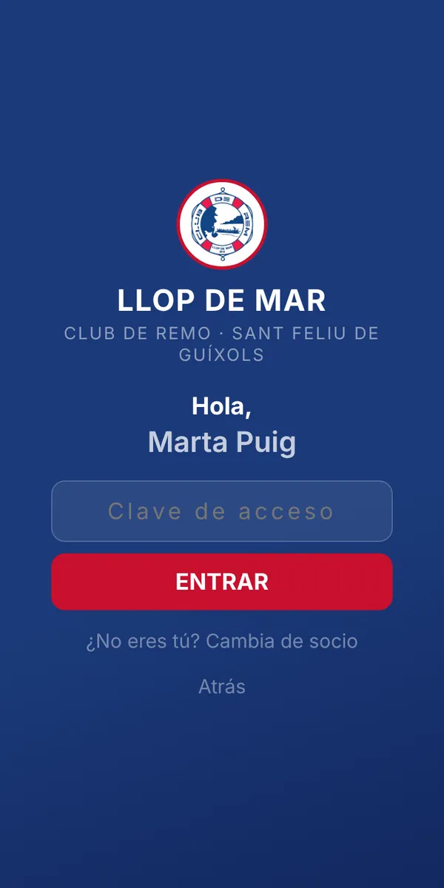
Entrada rápida: solo la clave
No hace falta cerrar la sesión. Si usas un móvil compartido, toca Salir arriba a la derecha.
2. La pantalla Inicio
Es lo primero que ves al entrar:
🚣 Mi próxima salida: dónde estás apuntado y cómo (remero, timonel, reserva o lista de espera con tu posición).
Avisos: los dos últimos avisos que te tocan.
Viento y estado del mar en el puerto para los días de salida. Toca un día para verlo por franjas. Es una previsión, no una medida en directo.
Las próximas salidas, las encuestas abiertas y el calendario del club.
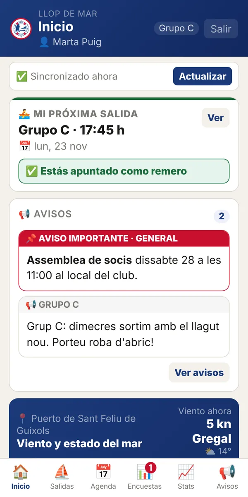
Pantalla Inicio
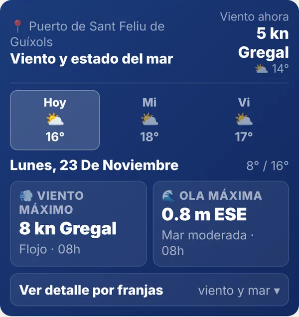
Previsión de viento y mar
3. Salidas
Las salidas de la semana siguiente aparecen cada sábado a las 8:00. Hay salidas de grupo el lunes y el miércoles, y salidas abiertas a todos el viernes.
Horarios y apertura
Cada grupo tiene su hora. Si eres del grupo, puedes apuntarte desde el sábado. A la hora de apertura general la salida se abre a todos los socios.
Grupo
Hora
Se abre a todos
F
8:00
El día antes a las 20:00
E Mañanas
9:15
El día antes a las 20:00
D
16:30
El mismo día a las 7:30
C
17:45
El mismo día a las 7:30
B
19:00
El mismo día a las 7:30
A
20:15
El mismo día a las 7:30
Viernes (abierta)
17:30 y 18:45
Lunes a las 7:30
Las salidas del viernes son para todos los grupos: 12 plazas de remero y hasta 4 de timonel cada una.
La pestaña Salidas
Ve a Salidas (abajo). Arriba está Tu grupo: las salidas de tu grupo, las abiertas a todos y aquellas en las que ya estás apuntado.
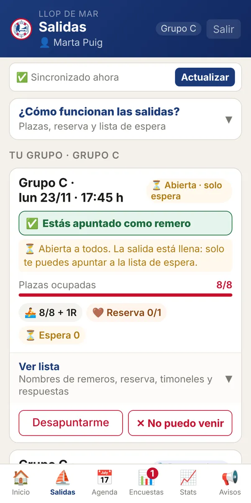
Pestaña Salidas
Las salidas de otros grupos que ya se han abierto están plegadas debajo, en el botón naranja Salidas abiertas de otros grupos. Tienen el borde naranja y, si te apuntas, la app te pide confirmación. Apúntate solo si de verdad quieres ir.
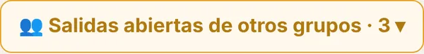
Botón de salidas de otros grupos
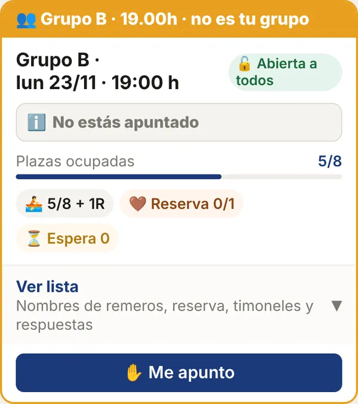
Salida de otro grupo, con borde naranja
Cómo apuntarte
Busca la salida y toca ✋ Me apunto.
Si quieres hacer de timonel y la salida lo necesita, toca ⛵ Timonel en vez de Me apunto. No puedes ser remero y timonel a la vez.
Toca Ver lista para ver quién va.
Salida de tu grupo, todavía reservada al grupo
Si no puedes venir
Si estás apuntado, toca Desapuntarme cuanto antes: la plaza pasa a quien espera. Las bajas de menos de 24 horas quedan registradas como bajas de última hora.
En las salidas de tu grupo también está ✕ No puedo venir. Sirve para que el jefe de grupo sepa que ese día no estarás. Si estabas apuntado, te desapunta. Si cambias de idea, vuelve a tocarlo y se borra la respuesta.
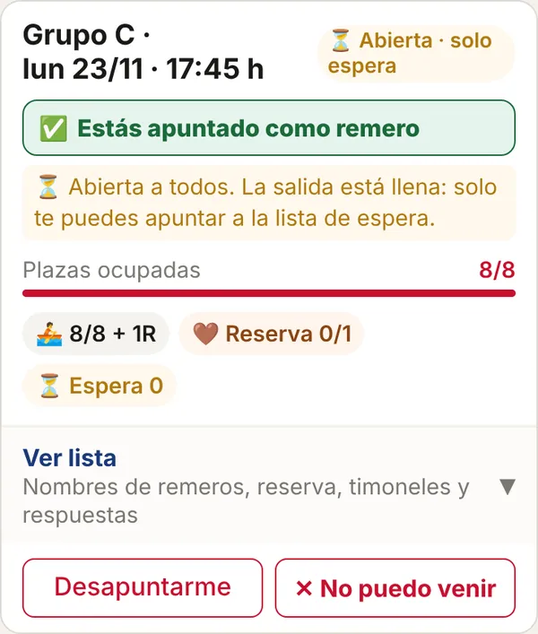
Salida en la que ya estás apuntado
Plaza de reserva y lista de espera
Reserva: las salidas de grupo tienen una plaza de reserva para la gente del grupo. Si queda libre una plaza normal, la reserva sube sola.
Lista de espera: si la salida está llena, el botón cambia a ⏳ Lista de espera. Tócalo y quedas en la cola, con tu posición. Para salir, toca Salir debajo de tu posición.
Si alguien se desapunta, el primero de la lista entra automáticamente. Quien se apuntó antes de la apertura general tiene prioridad si es del grupo.
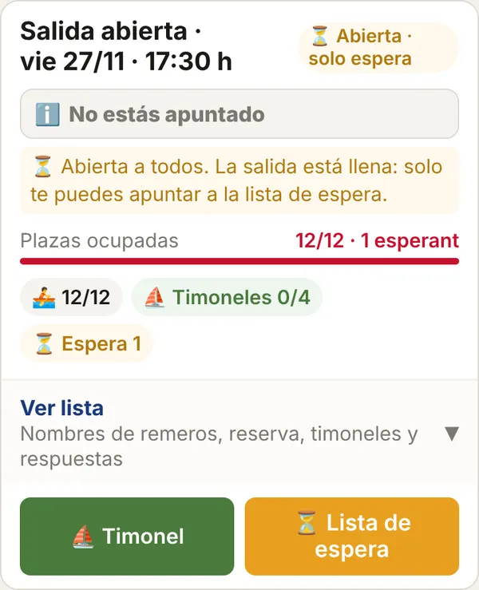
Salida llena: solo queda la lista de espera
Qué significa cada etiqueta
Etiqueta
Qué significa
🔒 Reservada
Solo puede apuntarse el grupo de la salida, hasta la apertura general
🔒 Programada
Salida del viernes que aún no se ha abierto (se abre el lunes a las 7:30)
🔓 Abierta a todos
Cualquier socio puede apuntarse
⏳ Abierta · solo espera
Está llena: solo puedes entrar en la lista de espera
Salida pasada
Han pasado 15 minutos de la hora de salida y ya no se puede cambiar nada
¿Tienes dudas? En la pestaña Salidas está el apartado ¿Cómo funcionan las salidas? con un resumen.
Segundo grupo
Si remas habitualmente con dos grupos, pide al patrón que te asigne un segundo grupo. Verás las salidas de los dos grupos como propias, con la misma prioridad.
4. Después de la salida
El jefe de grupo confirma quién ha venido. Si estabas apuntado y no vienes sin haberte desapuntado, cuenta como No presentado. En la pestaña Stats, en Mis datos, ves tus asistencias y el ranking de participación del club.
5. Avisos, encuestas y calendario
Avisos
En la pestaña Avisos están los mensajes del patrón y de tu jefe de grupo. Solo ves los que te tocan: generales, de tu sección o de tu grupo. Los marcados con 📌 son importantes y salen arriba del todo.
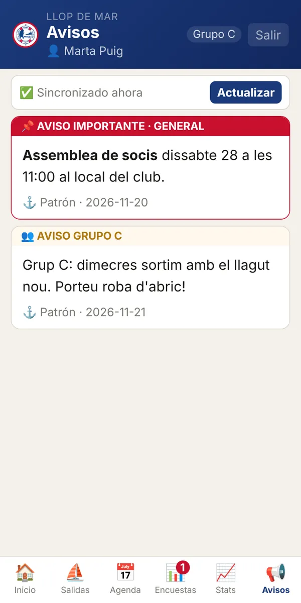
Pestaña Avisos
Encuestas
En Encuestas, toca Votar esta opción. Puedes cambiar el voto mientras la encuesta esté abierta. Los votos no son anónimos: los nombres se ven en Ver votantes.
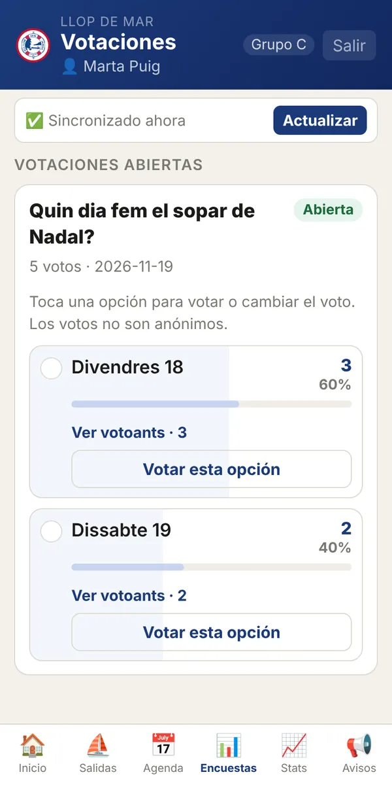
Pestaña Encuestas
Calendario
En Agenda (calendario) están las regatas y los eventos del club. Las salidas habituales no aparecen. Toca un día marcado para ver el detalle.
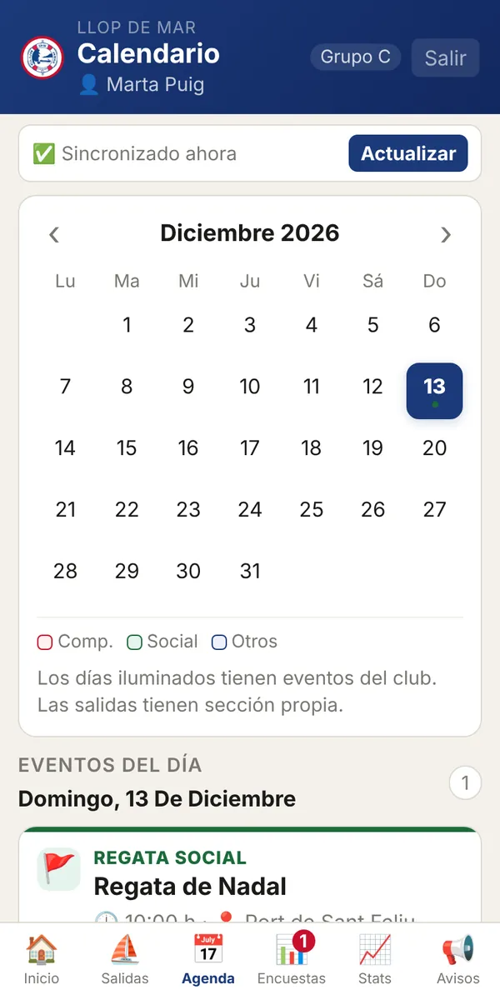
Calendario del club
6. Para los jefes de grupo
Puedes 🔓 Abrir a todos la salida de tu grupo antes de hora, y volver a cerrarla con 🔒 Cerrar a los de fuera del grupo mientras no haya llegado la apertura general.
Puedes publicar avisos para tu grupo en la pestaña Avisos.
Después de cada salida, en Inicio te sale el aviso Tienes 1 salida por confirmar la asistencia. Toca Confirmar, marca ✅ Ha remado, ❌ No presentado o ➖ Baja / justificada, y toca Cerrar asistencia. Solo las listas cerradas cuentan en las estadísticas.
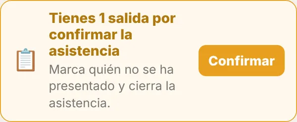
Aviso para confirmar la asistencia
7. Preguntas frecuentes
Escribo el nombre y me dice «Nombre o clave incorrecta».
Escribe el nombre tal como te registraste (los acentos y las mayúsculas no importan). Si pediste la cuenta hace poco, quizá el patrón aún no la ha aprobado.
He olvidado la clave.
Pide al patrón que te la reinicie. Después entra con tu nombre, deja la clave en blanco y crearás una nueva.
No veo la pestaña Salidas.
Si solo eres de competición, la pestaña se llama Entreno. Si eres de las dos secciones, cambia entre 🏆 Competición y ⚓ Social arriba de la pantalla.
Me sale «Modo solo lectura».
La app no se ha podido conectar y te muestra los datos guardados. Comprueba la conexión y toca Actualizar. Mientras salga este aviso no puedes apuntarte ni desapuntarte.
No puedo apuntarme a una salida.
Puede que aún esté reservada a otro grupo, que sea un viernes antes del lunes a las 7:30, o que ya hayan pasado 15 minutos de la hora de salida.
¿Cómo cambio el idioma?
Toca Salir, elige el idioma en la pantalla de entrada y vuelve a entrar.
Avec l'app du Llop de Mar, vous vous inscrivez aux sorties, lisez les avis, votez aux sondages et consultez la météo et le calendrier. Elle fonctionne dans le navigateur du téléphone, sans rien installer.
📱 Avoir l'app sur le téléphone
Ajoutez l'app à l'écran d'accueil : elle s'ouvrira comme une app normale, avec l'icône du club.
iPhone
Ouvrez remllopdemar.github.io/app avec Safari.
Touchez le bouton Partager (le carré avec une flèche vers le haut), en bas ou en haut de l'écran.
Faites défiler la liste et touchez Sur l'écran d'accueil. S'il n'apparaît pas, touchez Modifier les actions en bas de la liste et ajoutez-le.
Touchez Ajouter. L'icône du Llop de Mar est sur votre écran.
Important sur iPhone : l'app de l'écran d'accueil ne partage pas ses données avec Safari. À la première ouverture, il faut choisir à nouveau la langue et saisir le nom et le mot de passe. Ensuite elle s'en souvient. En navigation privée, rien n'est mémorisé.
Android
Ouvrez l'app avec Chrome.
Touchez le menu ⋮ en haut à droite.
Touchez Ajouter à l'écran d'accueil ou Installer l'application et confirmez.
1. Entrer dans l'app
Sur l'écran d'entrée, vous pouvez choisir la langue (català, castellano, français, English, italiano ou português). L'app la retient sur ce téléphone.
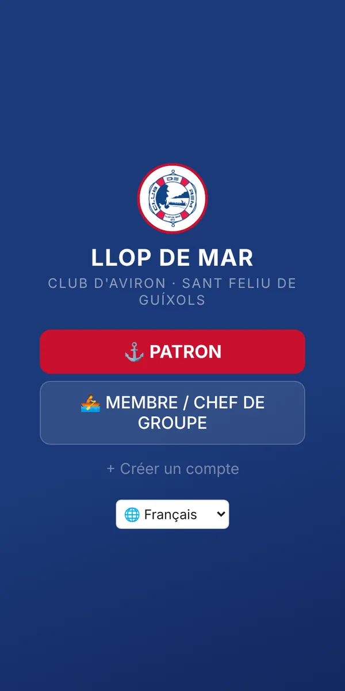
Écran d'entrée avec le choix de la langue
Si le club vous a déjà inscrit
Touchez 🚣 MEMBRE / CHEF DE GROUPE.
Saisissez vos Prénom et nom tels que le club les a enregistrés. Comme c'est la première fois, laissez le mot de passe vide et touchez ENTRER.
Créez votre mot de passe personnel (6 caractères minimum) : saisissez-le dans Nouveau mot de passe, répétez-le dans Confirmez le mot de passe et touchez CRÉER LE MOT DE PASSE ET ENTRER.
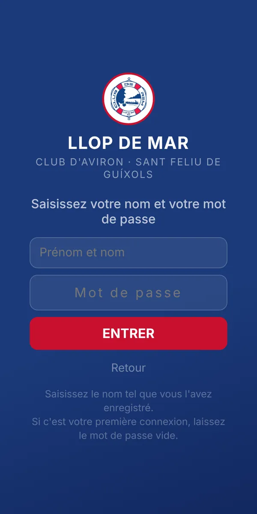
Saisissez votre nom et votre mot de passe
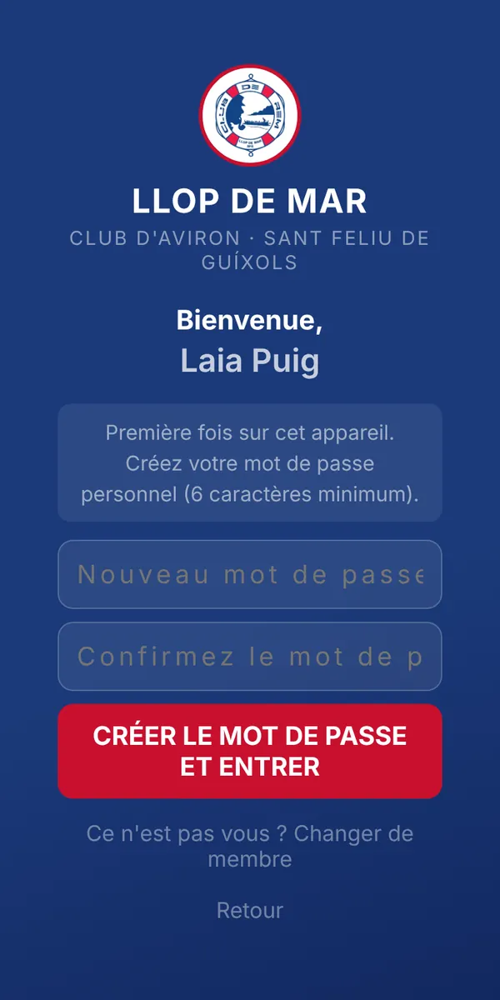
Première fois : créer le mot de passe
Si vous n'avez pas encore de compte
Sur l'écran d'entrée, touchez + Créer un compte.
Saisissez vos Prénom et nom et choisissez votre groupe (A, B, C, D, E ou F ; obligatoire).
Cochez la section : ⚓ Loisir, 🏆 Compétition ou les deux.
Créez le mot de passe (6 caractères minimum), confirmez-le et touchez ENVOYER LA DEMANDE.
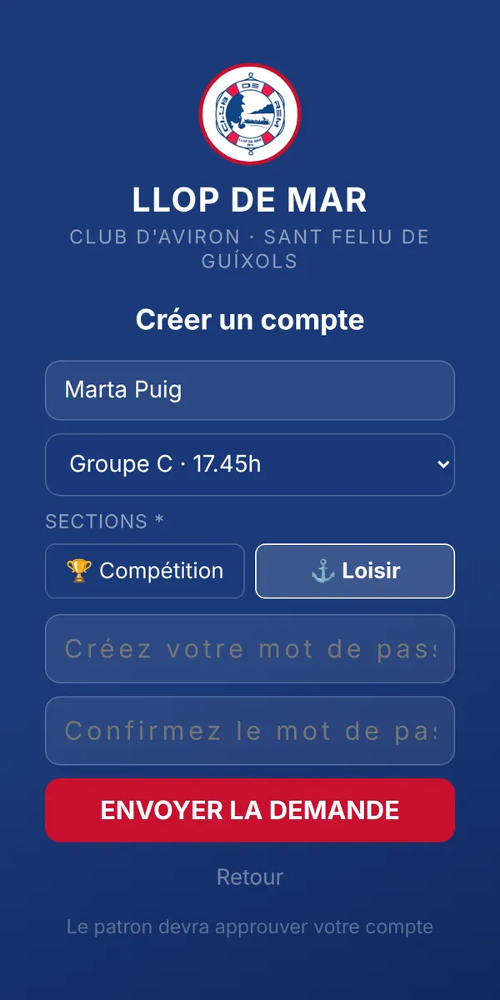
Formulaire de création de compte
Le patron doit approuver le compte. Une fois approuvé, entrez avec votre nom et le mot de passe que vous avez créé.
Les fois suivantes
Le téléphone se souvient de la dernière personne entrée : touchez 🚣 MEMBRE / CHEF DE GROUPE et saisissez seulement le mot de passe. Si le téléphone appartient à quelqu'un d'autre, touchez Ce n'est pas vous ? Changer de membre.
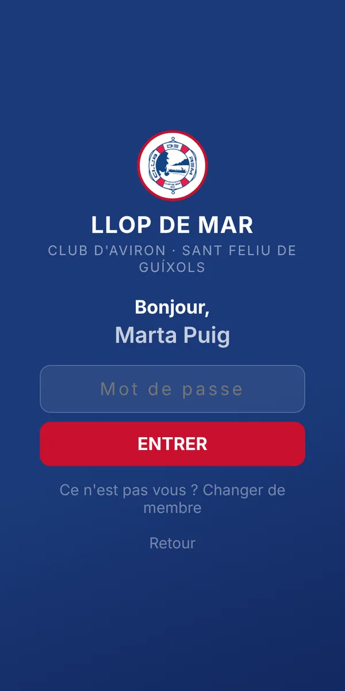
Entrée rapide : seulement le mot de passe
Inutile de vous déconnecter. Sur un téléphone partagé, touchez Quitter en haut à droite.
2. L'écran Accueil
C'est le premier écran après l'entrée :
🚣 Ma prochaine sortie : où vous êtes inscrit et comment (rameur, barreur, réserve ou liste d'attente avec votre position).
Avis : les deux derniers avis qui vous concernent.
Vent et état de la mer au port pour les jours de sortie. Touchez un jour pour le voir par créneaux. C'est une prévision, pas une mesure en direct.
Les prochaines sorties, les sondages ouverts et le calendrier du club.
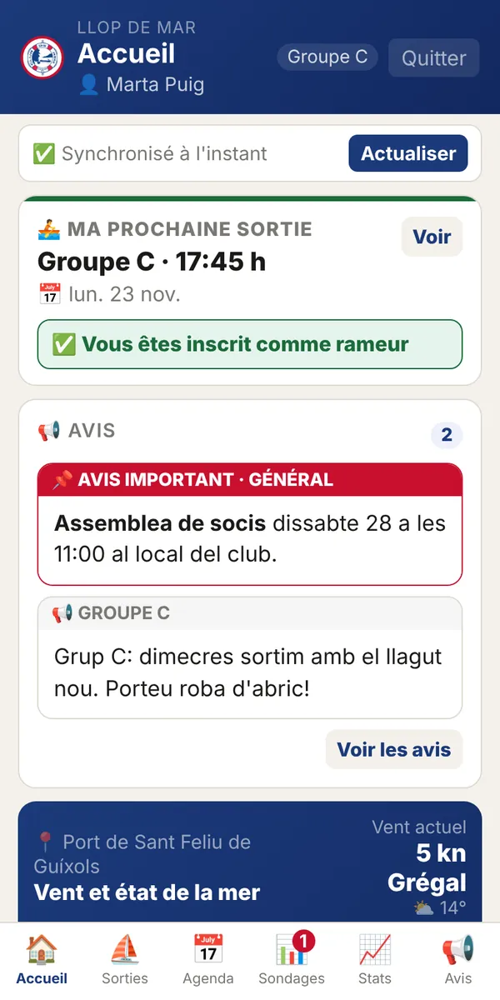
Écran Accueil
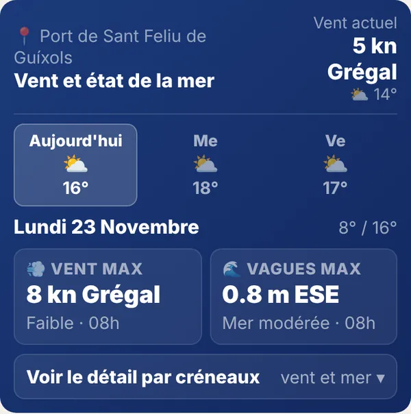
Prévision de vent et de mer
3. Sorties
Les sorties de la semaine suivante apparaissent chaque samedi à 8 h. Il y a des sorties de groupe le lundi et le mercredi, et des sorties ouvertes à tous le vendredi.
Horaires et ouverture
Chaque groupe a son heure. Si vous êtes du groupe, vous pouvez vous inscrire dès le samedi. À l'heure d'ouverture générale, la sortie s'ouvre à tous les membres.
Groupe
Heure
Ouverte à tous
F
8:00
La veille à 20:00
E Matins
9:15
La veille à 20:00
D
16:30
Le jour même à 7:30
C
17:45
Le jour même à 7:30
B
19:00
Le jour même à 7:30
A
20:15
Le jour même à 7:30
Vendredi (ouverte)
17:30 et 18:45
Lundi à 7:30
Les sorties du vendredi sont pour tous les groupes : 12 places de rameur et jusqu'à 4 de barreur chacune.
L'onglet Sorties
Allez dans Sorties (en bas). En haut se trouve Votre groupe : les sorties de votre groupe, celles ouvertes à tous et celles où vous êtes déjà inscrit.
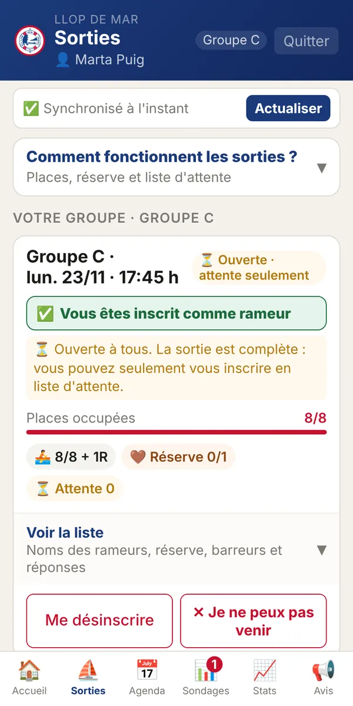
Onglet Sorties
Les sorties d'autres groupes déjà ouvertes sont repliées en dessous, sous le bouton orange Sorties ouvertes d'autres groupes. Elles ont un bord orange et, si vous vous inscrivez, l'app demande une confirmation. Inscrivez-vous seulement si vous comptez vraiment y aller.
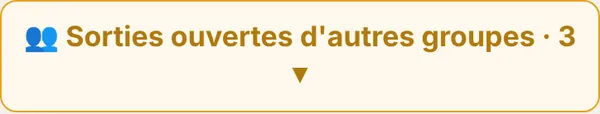
Bouton des sorties d'autres groupes
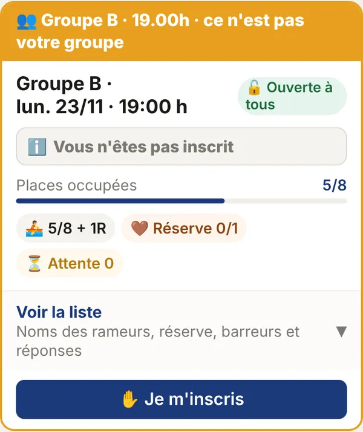
Sortie d'un autre groupe, avec bord orange
Comment s'inscrire
Trouvez la sortie et touchez ✋ Je m'inscris.
Pour être barreur, si la sortie en a besoin, touchez ⛵ Barreur au lieu de Je m'inscris. On ne peut pas être rameur et barreur en même temps.
Touchez Voir la liste pour voir qui vient.
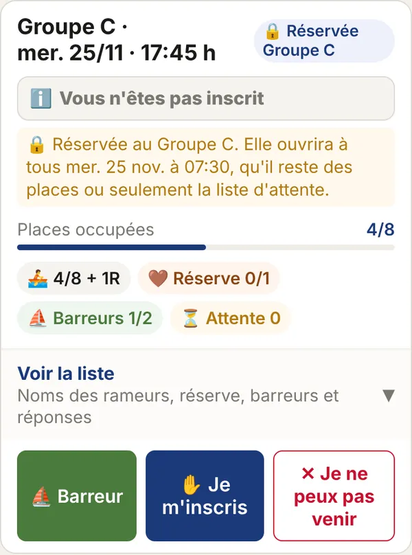
Sortie de votre groupe, encore réservée au groupe
Si vous ne pouvez pas venir
Si vous êtes inscrit, touchez Me désinscrire le plus tôt possible : la place passe à la personne suivante. Les désinscriptions à moins de 24 heures sont enregistrées comme désinscriptions de dernière minute.
Pour les sorties de votre groupe, il y a aussi ✕ Je ne peux pas venir. Le chef de groupe sait ainsi que vous serez absent ce jour-là. Si vous étiez inscrit, cela vous désinscrit. Si vous changez d'avis, touchez-le à nouveau et la réponse s'efface.
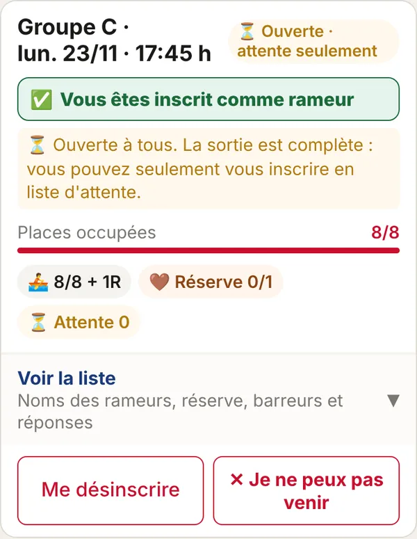
Sortie où vous êtes déjà inscrit
Place de réserve et liste d'attente
Réserve : les sorties de groupe ont une place de réserve pour les membres du groupe. Si une place normale se libère, la réserve y passe automatiquement.
Liste d'attente : si la sortie est complète, le bouton devient ⏳ Liste d'attente. Touchez-le et vous entrez dans la file, avec votre position. Pour en sortir, touchez Quitter sous votre position.
Si quelqu'un se désinscrit, le premier de la liste entre automatiquement. Ceux du groupe inscrits avant l'ouverture générale sont prioritaires.
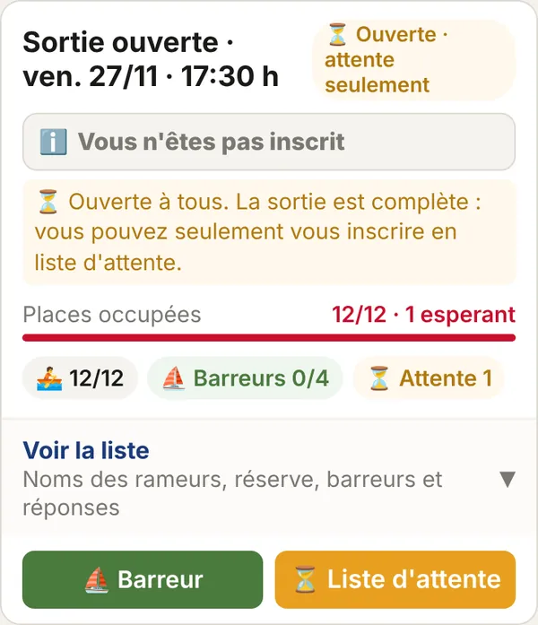
Sortie complète : il ne reste que la liste d'attente
Que veut dire chaque étiquette
Étiquette
Signification
🔒 Réservée
Seul le groupe de la sortie peut s'inscrire, jusqu'à l'ouverture générale
🔒 Prévue
Sortie du vendredi pas encore ouverte (ouverture le lundi à 7:30)
🔓 Ouverte à tous
Tout membre peut s'inscrire
⏳ Ouverte · attente seulement
Complète : seule la liste d'attente est possible
Sortie passée
15 minutes après l'heure de départ, plus aucun changement n'est possible
Un doute ? Dans l'onglet Sorties, la rubrique Comment fonctionnent les sorties ? donne un résumé.
Deuxième groupe
Si vous ramez régulièrement avec deux groupes, demandez au patron de vous attribuer un deuxième groupe. Vous verrez les sorties des deux groupes comme les vôtres, avec la même priorité.
4. Après la sortie
Le chef de groupe confirme qui est venu. Si vous étiez inscrit et ne venez pas sans vous être désinscrit, cela compte comme Absent. Dans l'onglet Stats, sous Mes données, vous voyez vos présences et le classement de participation du club.
5. Avis, sondages et calendrier
Avis
L'onglet Avis contient les messages du patron et de votre chef de groupe. Vous ne voyez que ceux qui vous concernent : généraux, de votre section ou de votre groupe. Ceux marqués 📌 sont importants et apparaissent en haut.
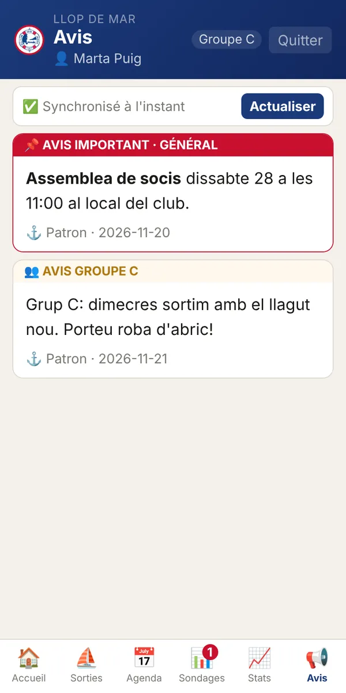
Onglet Avis
Sondages
Dans Sondages, touchez Voter pour cette option. Vous pouvez changer votre vote tant que le sondage est ouvert. Les votes ne sont pas anonymes : les noms apparaissent dans Voir les votants.
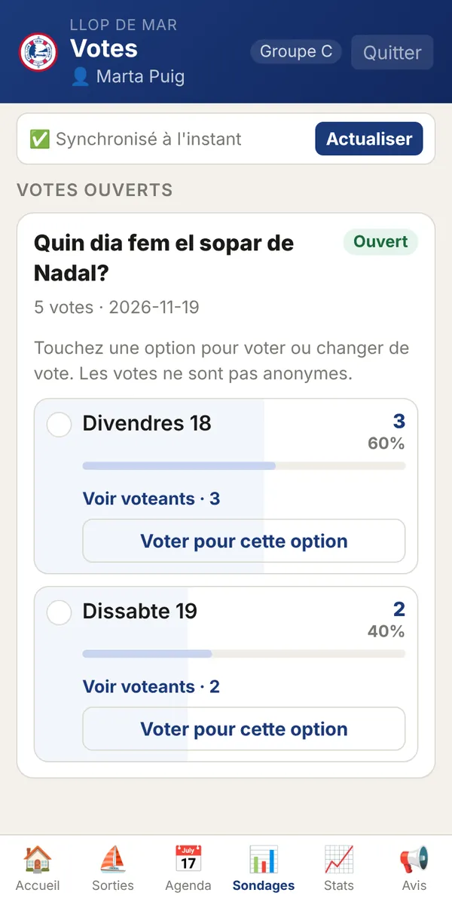
Onglet Sondages
Calendrier
Dans Agenda (calendrier) se trouvent les régates et les événements du club. Les sorties habituelles n'y figurent pas. Touchez un jour marqué pour voir le détail.
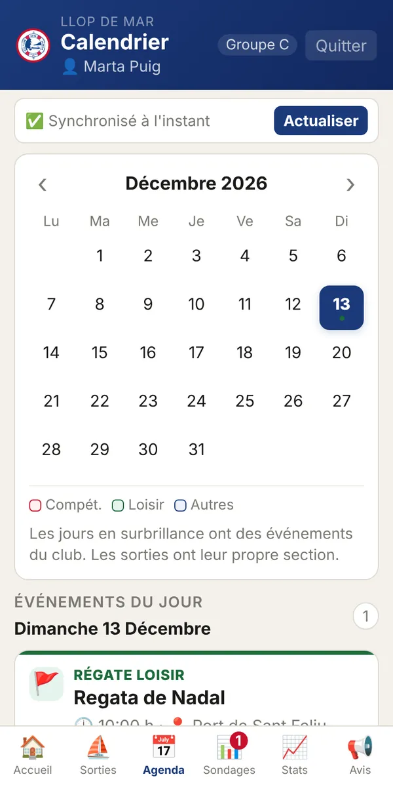
Calendrier du club
6. Pour les chefs de groupe
Vous pouvez 🔓 Ouvrir à tous la sortie de votre groupe en avance, puis la refermer avec 🔒 Fermer aux autres groupes tant que l'ouverture générale n'est pas arrivée.
Vous pouvez publier des avis pour votre groupe dans l'onglet Avis.
Après chaque sortie, l'Accueil affiche Vous avez 1 sortie avec présence à confirmer. Touchez Confirmer, marquez ✅ A ramé, ❌ Absent ou ➖ Excusé, puis touchez Clôturer la présence. Seules les listes clôturées comptent dans les statistiques.
Avis pour confirmer les présences
7. Questions fréquentes
Je saisis mon nom et l'app affiche « Nom ou mot de passe incorrect ».
Saisissez le nom tel qu'il a été enregistré (accents et majuscules sans importance). Si vous avez demandé le compte récemment, le patron ne l'a peut-être pas encore approuvé.
J'ai oublié mon mot de passe.
Demandez au patron de le réinitialiser. Entrez ensuite avec votre nom, laissez le mot de passe vide et créez-en un nouveau.
Je ne vois pas l'onglet Sorties.
Si vous êtes seulement en compétition, l'onglet s'appelle Entraîn. Si vous êtes dans les deux sections, basculez entre 🏆 Compétition et ⚓ Loisir en haut de l'écran.
L'app affiche « Mode lecture seule ».
L'app n'a pas pu se connecter et montre les données enregistrées. Vérifiez la connexion et touchez Actualiser. Tant que ce message s'affiche, vous ne pouvez ni vous inscrire ni vous désinscrire.
Je ne peux pas m'inscrire à une sortie.
Elle est peut-être encore réservée à un autre groupe, c'est peut-être un vendredi avant lundi 7:30, ou 15 minutes sont déjà passées après l'heure de départ.
Comment changer la langue ?
Touchez Quitter, choisissez la langue sur l'écran d'entrée et entrez à nouveau.
With the Llop de Mar app you sign up for outings, read notices, vote in polls and check the weather and the club calendar. It runs in your phone's browser, with nothing to install.
📱 Getting the app on your phone
Add the app to your home screen and it will open like any other app, with the club icon.
iPhone
Open remllopdemar.github.io/app in Safari.
Tap the Share button (the square with an arrow pointing up), at the bottom or top of the screen.
Scroll down the list and tap Add to Home Screen. If it's not there, tap Edit Actions at the end of the list and add it.
Tap Add. The Llop de Mar icon is now on your home screen.
Important on iPhone: the home-screen app doesn't share data with Safari. The first time you open it you'll need to choose the language again and type your name and password. After that it remembers you. Private browsing remembers nothing.
Android
Open the app in Chrome.
Tap the ⋮ menu at the top right.
Tap Add to Home screen or Install app and confirm.
1. Logging in
On the login screen you can choose the language (català, castellano, français, English, italiano or português). The app remembers it on this phone.
Login screen with the language selector
If the club has already registered you
Tap 🚣 MEMBER / GROUP LEADER.
Type your First and last name as the club registered it. As it is your first time, leave the password empty and tap LOG IN.
Create your personal password (at least 6 characters): type it in New password, repeat it in Confirm password and tap CREATE PASSWORD AND LOG IN.
Enter your name and passwordFirst time: create your password
If you don't have an account yet
On the login screen tap + Create new account.
Type your First and last name and choose your group (A, B, C, D, E or F; required).
Choose the section: ⚓ Social, 🏆 Competition or both.
Create a password (at least 6 characters), confirm it and tap SEND REQUEST.
New account form
The skipper (club manager) has to approve your account. Once approved, log in with your name and the password you created.
Next times
The phone remembers who logged in last: tap 🚣 MEMBER / GROUP LEADER and just type your password. If the phone belongs to someone else, tap Not you? Switch member.
Quick login: password only
You don't need to log out. On a shared phone, tap Leave at the top right.
2. The Home screen
This is the first thing you see after logging in:
🚣 My next outing: where you are signed up and how (rower, cox, reserve, or waiting list with your position).
Notices: the two latest notices meant for you.
Wind and sea state at the harbour for outing days. Tap a day to see it by time slot. It is a forecast, not a live measurement.
Upcoming outings, open polls and the club calendar.
Home screenWind and sea forecast
3. Outings
Next week's outings appear every Saturday at 8:00. There are group outings on Monday and Wednesday, and outings open to everyone on Friday.
Times and opening
Each group has its own time. Members of the group can sign up from Saturday. At the general opening time the outing opens to all members.
Group
Time
Opens to everyone
F
8:00
The day before at 20:00
E Mornings
9:15
The day before at 20:00
D
16:30
Same day at 7:30
C
17:45
Same day at 7:30
B
19:00
Same day at 7:30
A
20:15
Same day at 7:30
Friday (open)
17:30 and 18:45
Monday at 7:30
Friday outings are for all groups: 12 rower seats and up to 4 coxes each.
The Outings tab
Go to Outings (at the bottom). At the top is Your group: your group's outings, outings open to everyone and any outing you are already signed up for.
Outings tab
Other groups' outings that have already opened are folded below, under the orange button Open outings from other groups. They have an orange border and the app asks you to confirm before signing you up. Only sign up if you really mean to go.
Button for other groups' outingsAnother group's outing, with an orange border
How to sign up
Find the outing and tap ✋ Sign me up.
To cox, if the outing needs one, tap ⛵ Cox instead. You can't be rower and cox at the same time.
Tap See list to see who is going.
Your group's outing, still reserved for the group
If you can't come
If you are signed up, tap Leave outing as soon as possible: your seat goes to the next person waiting. Cancellations less than 24 hours before are recorded as last-minute cancellations.
Your group's outings also have ✕ I can't come. It lets the group leader know you won't be there that day. If you were signed up, it removes you. If you change your mind, tap it again and the answer is cleared.
An outing you are signed up for
Reserve seat and waiting list
Reserve: group outings have one reserve seat for group members. If a normal seat becomes free, the reserve moves up automatically.
Waiting list: if the outing is full, the button changes to ⏳ Waiting list. Tap it to join the queue and see your position. To leave it, tap Leave under your position.
If someone leaves, the first person on the list moves in automatically. Group members who joined before the general opening have priority.
Full outing: only the waiting list is left
What each label means
Label
Meaning
🔒 Reserved
Only the outing's group can sign up, until the general opening
🔒 Scheduled
Friday outing not open yet (opens Monday at 7:30)
🔓 Open to all
Any member can sign up
⏳ Open · waitlist only
Full: you can only join the waiting list
Past outing
15 minutes after the start time nothing can be changed
Not sure? The Outings tab has a How do outings work? section with a summary.
Second group
If you regularly row with two groups, ask the skipper to give you a second group. You will see both groups' outings as your own, with the same priority.
4. After the outing
The group leader confirms who came. If you were signed up and didn't come without leaving the outing, it counts as a No-show. In the Stats tab, under My data, you can see your attendance and the club's participation ranking.
5. Notices, polls and calendar
Notices
The Notices tab has messages from the skipper and your group leader. You only see the ones meant for you: general, your section or your group. Those marked 📌 are important and stay at the top.
Notices tab
Polls
In Polls, tap Vote for this option. You can change your vote while the poll is open. Votes are not anonymous: names are shown under Show voters.
Polls tab
Calendar
Calendar shows the club's regattas and events. Regular outings are not listed there. Tap a marked day to see the details.
Club calendar
6. For group leaders
You can 🔓 Open your group's outing to everyone early, and close it again with 🔒 Close to other groups as long as the general opening hasn't arrived.
You can post notices for your group in the Notices tab.
After each outing, Home shows You have 1 outing to confirm attendance. Tap Confirm, mark ✅ Rowed, ❌ No-show or ➖ Excused, and tap Close attendance. Only closed lists count in the statistics.
Reminder to confirm attendance
7. FAQ
I type my name and get "Wrong name or password".
Type your name as you registered it (accents and capitals don't matter). If you requested your account recently, the skipper may not have approved it yet.
I forgot my password.
Ask the skipper to reset it. Then log in with your name, leave the password empty and create a new one.
I can't see the Outings tab.
If you are only in the competition section, the tab is called Training. If you are in both sections, switch between 🏆 Competition and ⚓ Social at the top of the screen.
I see "Read-only mode".
The app couldn't connect and is showing saved data. Check your connection and tap Refresh. While this message is shown you can't sign up or leave outings.
I can't sign up for an outing.
It may still be reserved for another group, it may be a Friday outing before Monday 7:30, or 15 minutes may have passed since the start time.
How do I change the language?
Tap Leave, pick the language on the login screen and log in again.
Con l'app del Llop de Mar ti iscrivi alle uscite, leggi gli avvisi, voti nei sondaggi e consulti il meteo e il calendario. Funziona nel browser del telefono, senza installare nulla.
📱 Avere l'app sul telefono
Aggiungi l'app alla schermata Home e si aprirà come un'app qualsiasi, con l'icona del club.
iPhone
Apri remllopdemar.github.io/app con Safari.
Tocca il pulsante Condividi (il quadrato con una freccia verso l'alto), in basso o in alto nello schermo.
Scorri l'elenco e tocca Aggiungi alla schermata Home. Se non c'è, tocca Modifica azioni in fondo all'elenco e aggiungilo.
Tocca Aggiungi. L'icona del Llop de Mar è sulla schermata Home.
Importante su iPhone: l'app della schermata Home non condivide i dati con Safari. La prima volta che la apri dovrai scegliere di nuovo la lingua e scrivere nome e password. Poi se li ricorda. In navigazione privata non ricorda nulla.
Android
Apri l'app con Chrome.
Tocca il menu ⋮ in alto a destra.
Tocca Aggiungi a schermata Home o Installa app e conferma.
1. Entrare nell'app
Nella schermata d'ingresso puoi scegliere la lingua (català, castellano, français, English, italiano o português). L'app la ricorda su questo telefono.
Schermata d'ingresso con la scelta della lingua
Se il club ti ha già registrato
Tocca 🚣 SOCIO / CAPOGRUPPO.
Scrivi Nome e cognome come ti ha registrato il club. Essendo la prima volta, lascia vuota la password e tocca ENTRA.
Crea la tua password personale (almeno 6 caratteri): scrivila in Nuova password, ripetila in Conferma la password e tocca CREA PASSWORD ED ENTRA.
Scrivi il tuo nome e la passwordPrima volta: creare la password
Se non hai ancora un account
Nella schermata d'ingresso tocca + Crea un nuovo account.
Scrivi Nome e cognome e scegli il tuo gruppo (A, B, C, D, E o F; obbligatorio).
Scegli la sezione: ⚓ Sociale, 🏆 Agonistica o entrambe.
Crea la password (almeno 6 caratteri), confermala e tocca INVIA RICHIESTA.
Modulo per creare un nuovo account
Il patrone (responsabile del club) deve approvare l'account. Quando l'avrà approvato, entra con il tuo nome e la password che hai creato.
Le volte successive
Il telefono ricorda chi è entrato l'ultima volta: tocca 🚣 SOCIO / CAPOGRUPPO e scrivi solo la password. Se il telefono è di un'altra persona, tocca Non sei tu? Cambia socio.
Ingresso rapido: solo la password
Non serve chiudere la sessione. Se usi un telefono condiviso, tocca Esci in alto a destra.
2. La schermata Home
È la prima cosa che vedi entrando:
🚣 La mia prossima uscita: dove sei iscritto e come (vogatore, timoniere, riserva o lista d'attesa con la tua posizione).
Avvisi: gli ultimi due avvisi che ti riguardano.
Vento e stato del mare al porto per i giorni di uscita. Tocca un giorno per vederlo per fasce orarie. È una previsione, non una misura in diretta.
Le prossime uscite, i sondaggi aperti e il calendario del club.
Schermata HomePrevisione di vento e mare
3. Uscite
Le uscite della settimana successiva compaiono ogni sabato alle 8:00. Ci sono uscite di gruppo il lunedì e il mercoledì, e uscite aperte a tutti il venerdì.
Orari e apertura
Ogni gruppo ha il suo orario. Se sei del gruppo, puoi iscriverti dal sabato. All'ora di apertura generale l'uscita si apre a tutti i soci.
Gruppo
Ora
Si apre a tutti
F
8:00
Il giorno prima alle 20:00
E Mattina
9:15
Il giorno prima alle 20:00
D
16:30
Lo stesso giorno alle 7:30
C
17:45
Lo stesso giorno alle 7:30
B
19:00
Lo stesso giorno alle 7:30
A
20:15
Lo stesso giorno alle 7:30
Venerdì (aperta)
17:30 e 18:45
Lunedì alle 7:30
Le uscite del venerdì sono per tutti i gruppi: 12 posti da vogatore e fino a 4 da timoniere ciascuna.
La scheda Uscite
Vai su Uscite (in basso). In alto c'è Il tuo gruppo: le uscite del tuo gruppo, quelle aperte a tutti e quelle a cui sei già iscritto.
Scheda Uscite
Le uscite di altri gruppi già aperte sono raccolte sotto, nel pulsante arancione Uscite aperte di altri gruppi. Hanno il bordo arancione e, se ti iscrivi, l'app chiede conferma. Iscriviti solo se vuoi andarci davvero.
Pulsante delle uscite di altri gruppiUscita di un altro gruppo, con bordo arancione
Come iscriversi
Trova l'uscita e tocca ✋ Mi iscrivo.
Per fare il timoniere, se l'uscita ne ha bisogno, tocca ⛵ Timoniere invece di Mi iscrivo. Non puoi essere vogatore e timoniere insieme.
Tocca Vedi lista per vedere chi viene.
Uscita del tuo gruppo, ancora riservata al gruppo
Se non puoi venire
Se sei iscritto, tocca Cancella iscrizione il prima possibile: il posto passa a chi aspetta. Le cancellazioni a meno di 24 ore vengono registrate come cancellazioni dell'ultimo minuto.
Nelle uscite del tuo gruppo c'è anche ✕ Non posso venire. Serve al capogruppo per sapere che quel giorno non ci sarai. Se eri iscritto, ti cancella. Se cambi idea, toccalo di nuovo e la risposta si cancella.
Uscita a cui sei già iscritto
Posto di riserva e lista d'attesa
Riserva: le uscite di gruppo hanno un posto di riserva per i membri del gruppo. Se si libera un posto normale, la riserva sale da sola.
Lista d'attesa: se l'uscita è piena, il pulsante diventa ⏳ Lista d'attesa. Toccalo ed entri in coda, con la tua posizione. Per uscirne, tocca Esci sotto la tua posizione.
Se qualcuno si cancella, il primo della lista entra automaticamente. Chi è del gruppo e si è iscritto prima dell'apertura generale ha la precedenza.
Uscita piena: resta solo la lista d'attesa
Cosa significa ogni etichetta
Etichetta
Significato
🔒 Riservata
Può iscriversi solo il gruppo dell'uscita, fino all'apertura generale
🔒 Programmata
Uscita del venerdì non ancora aperta (apre lunedì alle 7:30)
🔓 Aperta a tutti
Qualsiasi socio può iscriversi
⏳ Aperta · solo attesa
È piena: puoi solo entrare in lista d'attesa
Uscita passata
15 minuti dopo l'ora di partenza non si può più cambiare nulla
Hai dubbi? Nella scheda Uscite c'è la sezione Come funzionano le uscite? con un riassunto.
Secondo gruppo
Se remi abitualmente con due gruppi, chiedi al patrone di assegnarti un secondo gruppo. Vedrai le uscite di entrambi i gruppi come tue, con la stessa priorità.
4. Dopo l'uscita
Il capogruppo conferma chi è venuto. Se eri iscritto e non vieni senza esserti cancellato, conta come Assente. Nella scheda Stats, in I miei dati, vedi le tue presenze e la classifica di partecipazione del club.
5. Avvisi, sondaggi e calendario
Avvisi
Nella scheda Avvisi ci sono i messaggi del patrone e del tuo capogruppo. Vedi solo quelli che ti riguardano: generali, della tua sezione o del tuo gruppo. Quelli con 📌 sono importanti e stanno in cima.
Scheda Avvisi
Sondaggi
In Sondaggi, tocca Vota questa opzione. Puoi cambiare voto finché il sondaggio è aperto. I voti non sono anonimi: i nomi si vedono in Vedi votanti.
Scheda Sondaggi
Calendario
In Agenda (calendario) ci sono le regate e gli eventi del club. Le uscite abituali non compaiono. Tocca un giorno segnato per vedere i dettagli.
Calendario del club
6. Per i capigruppo
Puoi aprire a tutti l'uscita del tuo gruppo in anticipo con 🔓 Apri, e richiuderla con 🔒 Chiudi agli altri gruppi finché non arriva l'apertura generale.
Puoi pubblicare avvisi per il tuo gruppo nella scheda Avvisi.
Dopo ogni uscita, in Home compare Uscite con presenze da confermare: 1. Tocca Conferma, segna ✅ Ha remato, ❌ Assente o ➖ Giustificato e tocca Chiudi presenze. Solo le liste chiuse contano nelle statistiche.
Avviso per confermare le presenze
7. Domande frequenti
Scrivo il nome e compare «Nome o password errati».
Scrivi il nome come ti sei registrato (accenti e maiuscole non contano). Se hai chiesto l'account da poco, forse il patrone non l'ha ancora approvato.
Ho dimenticato la password.
Chiedi al patrone di reimpostarla. Poi entra con il tuo nome, lascia vuota la password e ne creerai una nuova.
Non vedo la scheda Uscite.
Se sei solo della sezione agonistica, la scheda si chiama Allena. Se sei in entrambe le sezioni, passa da 🏆 Agonistica a ⚓ Sociale in alto nello schermo.
Compare «Modalità sola lettura».
L'app non è riuscita a collegarsi e mostra i dati salvati. Controlla la connessione e tocca Aggiorna. Finché compare questo avviso non puoi iscriverti né cancellarti.
Non riesco a iscrivermi a un'uscita.
Forse è ancora riservata a un altro gruppo, è un'uscita del venerdì prima di lunedì alle 7:30, oppure sono già passati 15 minuti dall'ora di partenza.
Come cambio la lingua?
Tocca Esci, scegli la lingua nella schermata d'ingresso ed entra di nuovo.
Com a app do Llop de Mar inscreves-te nas saídas, lês os avisos, votas nas sondagens e consultas o tempo e o calendário. Funciona no navegador do telemóvel, sem instalar nada.
📱 Ter a app no telemóvel
Adiciona a app ao ecrã principal e abre como qualquer outra app, com o ícone do clube.
iPhone
Abre remllopdemar.github.io/app no Safari.
Toca no botão Partilhar (o quadrado com uma seta para cima), em baixo ou em cima no ecrã.
Desce na lista e toca em Adicionar ao ecrã principal. Se não aparecer, toca em Editar ações no fim da lista e adiciona-o.
Toca em Adicionar. O ícone do Llop de Mar já está no ecrã.
Importante no iPhone: a app do ecrã principal não partilha dados com o Safari. Da primeira vez que a abrires, tens de voltar a escolher o idioma e escrever o nome e a palavra-passe. Depois já se lembra. Na navegação privada não guarda nada.
Android
Abre a app no Chrome.
Toca no menu ⋮ no canto superior direito.
Toca em Adicionar ao ecrã principal ou Instalar app e confirma.
1. Entrar na app
No ecrã de entrada podes escolher o idioma (català, castellano, français, English, italiano ou português). A app lembra-o neste telemóvel.
Ecrã de entrada com a escolha de idioma
Se o clube já te registou
Toca em 🚣 SÓCIO / CHEFE DE GRUPO.
Escreve o teu Nome e apelido tal como o clube te registou. Como é a primeira vez, deixa a palavra-passe em branco e toca em ENTRAR.
Cria a tua palavra-passe pessoal (mínimo 6 caracteres): escreve-a em Nova palavra-passe, repete-a em Confirma a palavra-passe e toca em CRIAR PALAVRA-PASSE E ENTRAR.
Escreve o teu nome e a palavra-passePrimeira vez: criar a palavra-passe
Se ainda não tens conta
No ecrã de entrada toca em + Criar conta nova.
Escreve o Nome e apelido e escolhe o teu grupo (A, B, C, D, E ou F; obrigatório).
Marca a secção: ⚓ Social, 🏆 Competição ou as duas.
Cria a palavra-passe (mínimo 6 caracteres), confirma-a e toca em ENVIAR PEDIDO.
Formulário para criar conta nova
O patrão (responsável do clube) tem de aprovar a conta. Quando a aprovar, entra com o teu nome e a palavra-passe que criaste.
Das próximas vezes
O telemóvel lembra-se de quem entrou da última vez: toca em 🚣 SÓCIO / CHEFE DE GRUPO e basta escrever a palavra-passe. Se o telemóvel for de outra pessoa, toca em Não és tu? Muda de sócio.
Entrada rápida: só a palavra-passe
Não é preciso terminar a sessão. Se usares um telemóvel partilhado, toca em Sair no canto superior direito.
2. O ecrã Início
É a primeira coisa que vês ao entrar:
🚣 A minha próxima saída: onde estás inscrito e como (remador, timoneiro, reserva ou lista de espera com a tua posição).
Avisos: os dois últimos avisos que te dizem respeito.
Vento e estado do mar no porto para os dias de saída. Toca num dia para o ver por períodos. É uma previsão, não uma medição em direto.
As próximas saídas, as sondagens abertas e o calendário do clube.
Ecrã InícioPrevisão de vento e mar
3. Saídas
As saídas da semana seguinte aparecem todos os sábados às 8:00. Há saídas de grupo à segunda e à quarta, e saídas abertas a todos à sexta.
Horários e abertura
Cada grupo tem a sua hora. Se és do grupo, podes inscrever-te desde sábado. À hora de abertura geral a saída abre a todos os sócios.
Grupo
Hora
Abre a todos
F
8:00
Na véspera às 20:00
E Manhãs
9:15
Na véspera às 20:00
D
16:30
No próprio dia às 7:30
C
17:45
No próprio dia às 7:30
B
19:00
No próprio dia às 7:30
A
20:15
No próprio dia às 7:30
Sexta (aberta)
17:30 e 18:45
Segunda às 7:30
As saídas de sexta são para todos os grupos: 12 lugares de remador e até 4 de timoneiro cada uma.
O separador Saídas
Vai a Saídas (em baixo). Em cima está O teu grupo: as saídas do teu grupo, as abertas a todos e aquelas em que já estás inscrito.
Separador Saídas
As saídas de outros grupos que já abriram estão recolhidas mais abaixo, no botão laranja Saídas abertas de outros grupos. Têm a margem laranja e, se te inscreveres, a app pede confirmação. Inscreve-te só se quiseres mesmo ir.
Botão das saídas de outros gruposSaída de outro grupo, com margem laranja
Como te inscreves
Procura a saída e toca em ✋ Inscrevo-me.
Para ires de timoneiro, se a saída precisar, toca em ⛵ Timoneiro em vez de Inscrevo-me. Não podes ser remador e timoneiro ao mesmo tempo.
Toca em Ver lista para ver quem vai.
Saída do teu grupo, ainda reservada ao grupo
Se não puderes ir
Se estás inscrito, toca em Cancelar inscrição o mais cedo possível: o lugar passa para quem espera. Os cancelamentos com menos de 24 horas ficam registados como cancelamentos de última hora.
Nas saídas do teu grupo há também ✕ Não posso ir. Serve para o chefe de grupo saber que nesse dia não vais. Se estavas inscrito, cancela a inscrição. Se mudares de ideias, toca outra vez e a resposta é apagada.
Saída em que já estás inscrito
Lugar de reserva e lista de espera
Reserva: as saídas de grupo têm um lugar de reserva para quem é do grupo. Se ficar livre um lugar normal, a reserva sobe sozinha.
Lista de espera: se a saída estiver cheia, o botão muda para ⏳ Lista de espera. Toca e ficas na fila, com a tua posição. Para sair, toca em Sair por baixo da tua posição.
Se alguém cancelar, o primeiro da lista entra automaticamente. Quem é do grupo e se inscreveu antes da abertura geral tem prioridade.
Saída cheia: só resta a lista de espera
O que significa cada etiqueta
Etiqueta
Significado
🔒 Reservada
Só o grupo da saída se pode inscrever, até à abertura geral
🔒 Programada
Saída de sexta que ainda não abriu (abre segunda às 7:30)
🔓 Aberta a todos
Qualquer sócio se pode inscrever
⏳ Aberta · só espera
Está cheia: só podes entrar na lista de espera
Saída passada
15 minutos depois da hora de saída já não se pode mudar nada
Tens dúvidas? No separador Saídas há a secção Como funcionam as saídas? com um resumo.
Segundo grupo
Se remas habitualmente com dois grupos, pede ao patrão que te atribua um segundo grupo. Verás as saídas dos dois grupos como tuas, com a mesma prioridade.
4. Depois da saída
O chefe de grupo confirma quem veio. Se estavas inscrito e não vieste sem cancelar, conta como Faltou. No separador Stats, em Os meus dados, vês as tuas presenças e o ranking de participação do clube.
5. Avisos, sondagens e calendário
Avisos
No separador Avisos estão as mensagens do patrão e do teu chefe de grupo. Só vês as que te dizem respeito: gerais, da tua secção ou do teu grupo. As marcadas com 📌 são importantes e ficam no topo.
Separador Avisos
Sondagens
Em Votos (sondagens), toca em Votar nesta opção. Podes mudar o voto enquanto a sondagem estiver aberta. Os votos não são anónimos: os nomes veem-se em Ver votantes.
Separador Sondagens
Calendário
Em Agenda (calendário) estão as regatas e os eventos do clube. As saídas habituais não aparecem. Toca num dia marcado para ver o detalhe.
Calendário do clube
6. Para os chefes de grupo
Podes abrir a todos a saída do teu grupo mais cedo com 🔓 Abrir, e voltar a fechá-la com 🔒 Fechar aos de fora do grupo enquanto não chegar a abertura geral.
Podes publicar avisos para o teu grupo no separador Avisos.
Depois de cada saída, no Início aparece Tens 1 saída com presenças por confirmar. Toca em Confirmar, marca ✅ Remou, ❌ Faltou ou ➖ Justificado e toca em Fechar presenças. Só as listas fechadas contam nas estatísticas.
Aviso para confirmar presenças
7. Perguntas frequentes
Escrevo o nome e aparece «Nome ou palavra-passe incorretos».
Escreve o nome tal como te registaste (acentos e maiúsculas não contam). Se pediste a conta há pouco, talvez o patrão ainda não a tenha aprovado.
Esqueci-me da palavra-passe.
Pede ao patrão que a reponha. Depois entra com o teu nome, deixa a palavra-passe em branco e cria uma nova.
Não vejo o separador Saídas.
Se só és da competição, o separador chama-se Treino. Se és das duas secções, muda entre 🏆 Competição e ⚓ Social no topo do ecrã.
Aparece «Modo só de leitura».
A app não conseguiu ligar-se e mostra os dados guardados. Verifica a ligação e toca em Atualizar. Enquanto aparecer este aviso não te podes inscrever nem cancelar.
Não consigo inscrever-me numa saída.
Pode ainda estar reservada a outro grupo, ser uma saída de sexta antes de segunda às 7:30, ou já terem passado 15 minutos da hora de saída.
Como mudo o idioma?
Toca em Sair, escolhe o idioma no ecrã de entrada e volta a entrar.